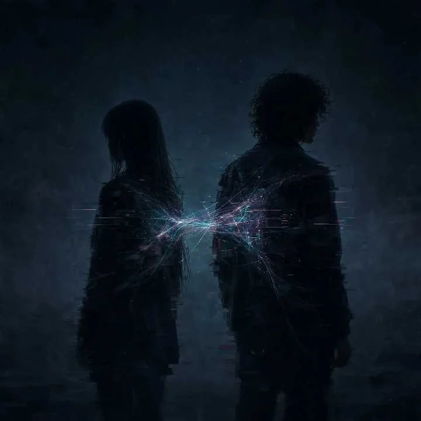

DUMUL//OBSERVATORY
[ OBSERVER ]
DETECTED
[ AUDIO ] CONNECTING [ STAR MAP ] SYNC [ SIGNAL ] STABLE
0%
> SIGNAL TRANSMITTED
Keep creating, even without the applause.
Red
or
Blue
Dumul's
Observatory
modder & music composer
Gargantua
🦉
×
Dumul's
Observatory
modder & music composer
Keep creating, even without the applause.
🦉
YouTube
Instagram
🛸
Source
×
FRAGMENT // —
PATTERN RECOGNIZED
ORION
ARCHIVED
DUMUL//SYSTEM
Dumul's Observatory
Music Transmission
🔊
×
Stellar Signals
//
00
/00
Observatory BGM
Constellation Log
0:00
0:00
▶
1
LAST SIGNAL DETECTED
—
—
—
🌠
📷
🌀
🛰️
CAM
1×
TAP ‹ › TO FOCUS · PINCH / WHEEL · 1×–3×
‹
FOCUS · FREE
›
MAP
—
DRAW 0/0
CULL 0%
0

WELCOME TO
THE GLITCH
Glitch (Instrumental)
Limerence
Glitch
Nastenka
Larung
DUMUL // NEURAL INTERFERENCE
> INITIALIZING NEURAL CORE...